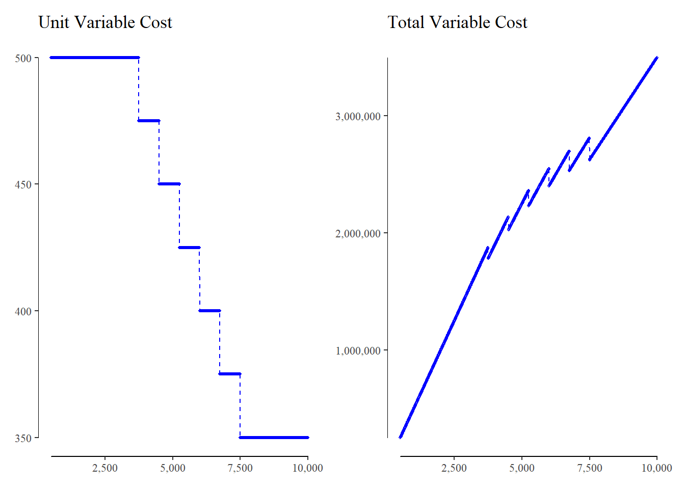

Business Case
Matthias Uckert
27 May, 2022
Define Input Functions
To derive our our profitability of our product, we first must define some input function. Namely, we need a function that defines the Variable Costs, Product Fixed Costs, and Revenue
Function: Variable Cost
We define a function for the Variable Costs: fnc_var_cost() with the following Input Parameters:
.cv (Variable Cost): Initial Variable
.v (Volume): The volume we want to derive the total variable cost for.
.vb (Base Volume): The base (minimum) volume. for ever additional x (.vd) volume we get an y (.d) discount on our variable cost.
.vc (Cap Volume): The cap (maximum) volume. After this volume no discount is granted anymore.
.vd (Volume Discount): For ever x (.vd) additional unit over the base volume (.vb) we get an y (.d) percent discount.
.d (Discount): The discount we get for ever x (.vd) additional unit over the base volume (.vb)
fnc_var_disc <- function(.v, .vb, .vc, .vd, .d) {
vu_ <- dplyr::case_when(
.v < .vb ~ .vb,
.v > .vc ~ .vc,
TRUE ~ .v
)
floor((vu_ - .vb) / .vd) * .d
}
fnc_var_unit <- function(.cv, .v, .vb, .vc, .vd, .d) {
disc_ <- fnc_var_disc(.v, .vb, .vc, .vd, .d)
.cv * (1 - disc_)
}
fnc_var_cost <- function(.cv, .v, .vb, .vc, .vd, .d) {
.v * fnc_var_unit(.cv, .v, .vb, .vc, .vd, .d)
}For convenience we added two helper functions fnc_var_disc() and fnc_var_unit() that calculate the discount as a function of volume and the unit cost of our product. Those functions will result in so-called Step Functions. Next we plot this functions with the following values:
.cv (Variable Cost): 1
.v (Volume): Range between 500 and 10,000
.vb (Base Volume): 2,500
.vc (Cap Volume): 7,500
.vd (Volume Discount): 1,000
.d (Discount): 5.00%

Function: Fixed Cost
We define a function for the Fixed Costs: fnc_var_cost() with the following Input Parameters:
.cf (Variable Cost): Initial Fixed Costs
.v (Volume): The volume we want to derive the total variable cost for.
.vm (Volume Multiplier): Fixed Cost double at this point
fnc_fix_mult <- function(.v, .vm) {
ceiling(.v / .vm)
}
fnc_fix_cost <- function(.cf, .v, .vm) {
.cf * fnc_fix_mult(.v, .vm)
}
fnc_fix_unit <- function(.cf, .v, .vm) {
(.cf * fnc_fix_mult(.v, .vm)) / .v
}For convenience we added two helper functions fnc_fix_disc() and fnc_fix_unit() that calculate the multiplier as a function of volume and the directly attributable unit fix cost of our product. Next we plot this functions with the following values:
.cf (Fixed Cost): 1
.v (Volume): Range between 500 and 10,000
.vm (Volume Multiplier): 1,000

Function: Price (Revenue)
We define a function for the Revenue: fnc_rev() with the following Input Parameters:
.v (Volume): The volume we want to derive the total variable cost for.
.p (Price): Initial Price
To do so, we first model the price as a function of volume by using a so-called sigmoid function.
We limit the resulting S-Curve between .6 to 1. The idea behind this is, that for every addition unit we want to sell, we have to lower the price by a certain amount.
fnc_rev_sigmoid <- function(.v) {
(1 - (1 / (1 + exp(-((.v / 1000) - 4.25))))) * .4 + .6
}
fnc_rev_unit <- function(.p, .v) {
.p * fnc_rev_sigmoid(.v)
}
fnc_rev <- function(.p, .v) {
.v * fnc_rev_unit(.p, .v)
}Next we plot this functions with the following values:
.p(Price): 750
.v (Volume): Range between 500 and 10,000

CM I, CM II, and Profit
|
Volume: 2,500
|
Volume: 5,000
|
Volume: 7,500
|
Volume: 10,000
|
|||||
|---|---|---|---|---|---|---|---|---|
| Revenue | 1,763,965 | 100.0% | 2,731,232 | 100.00% | 3,458,985 | 100.00% | 4,509,518 | 100.00% |
| Variable Cost | 1,250,000 | 70.9% | 2,250,000 | 82.38% | 2,625,000 | 75.89% | 3,500,000 | 77.61% |
| Contribution Margin I | 513,965 | 29.1% | 481,232 | 17.62% | 833,985 | 24.11% | 1,009,518 | 22.39% |
| Fixed Cost | 150,000 | 8.5% | 250,000 | 9.15% | 400,000 | 11.56% | 500,000 | 11.09% |
| Contribution Margin II | 363,965 | 20.6% | 231,232 | 8.47% | 433,985 | 12.55% | 509,518 | 11.30% |
| Company Cost | 250,000 | 14.2% | 250,000 | 9.15% | 250,000 | 7.23% | 250,000 | 5.54% |
| Profit | 113,965 | 6.5% | -18,768 | -0.69% | 183,985 | 5.32% | 259,518 | 5.75% |
Sensitivity


Monte Carlo
| Profit > 0 | 53% |
| Profit < 0 | 47% |
| Mean | 118,780 |
| Median | 89,773 |
| Minimum | -13,204,871 |
| Maximum | 8,942,726 |